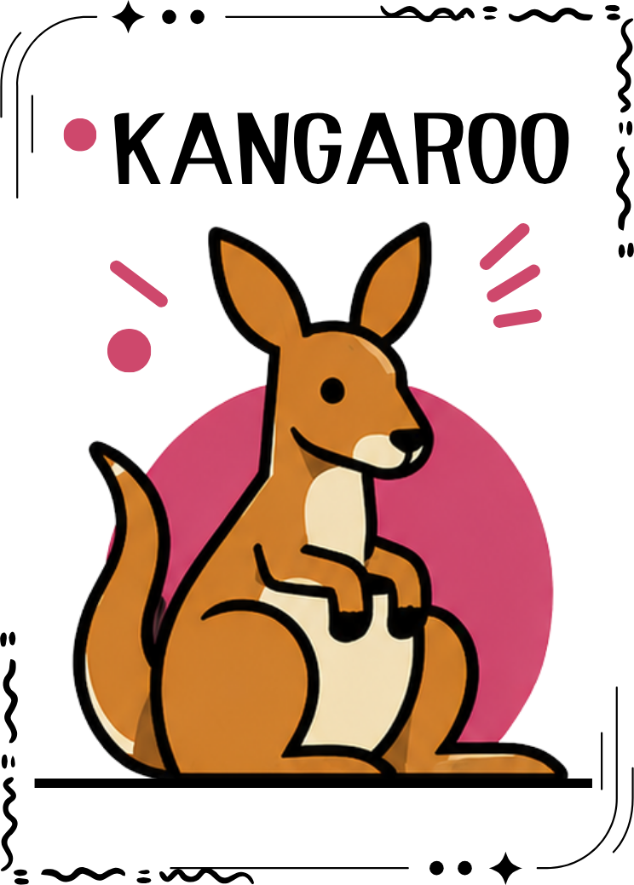
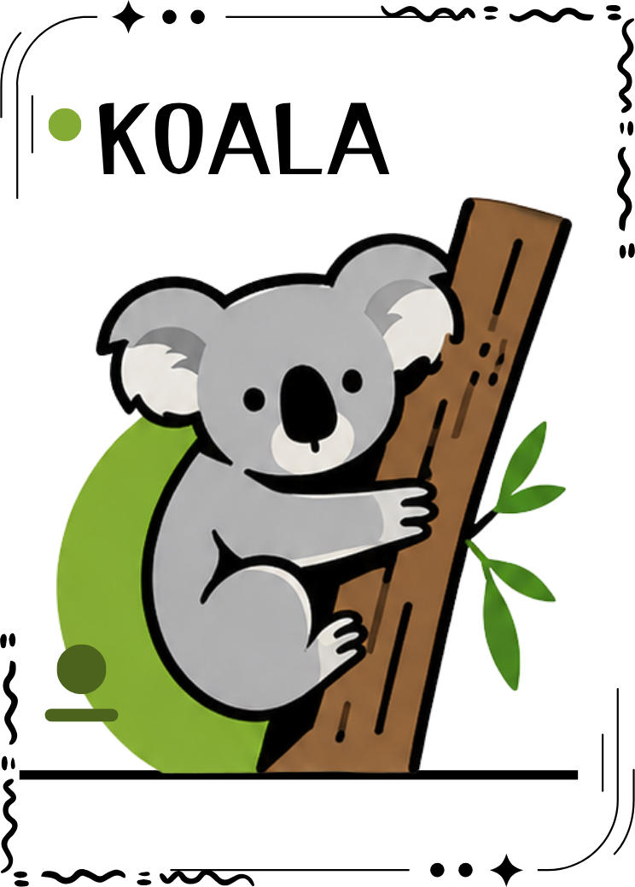
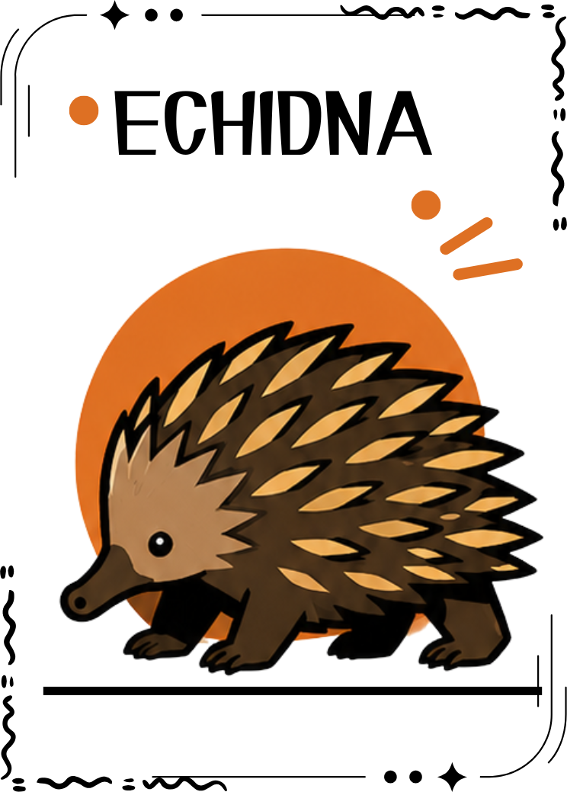
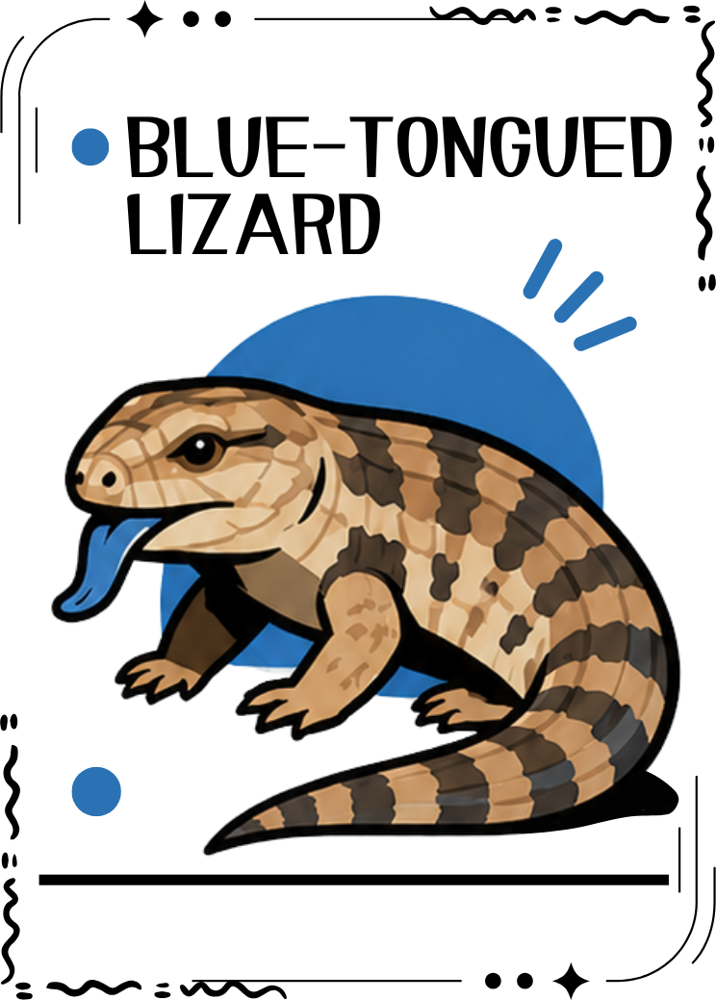

Click to reveal

✦
Animal Mirror
Tap the card to reveal your result.
Your card will move into the final result page.




Where do you draw the line between road space and animal life?
This quiz does not test your personality. It reflects how you perceive roadkill: whether you notice its consequences, accept human responsibility, normalise animal deaths, emotionally process them, or choose to respond.